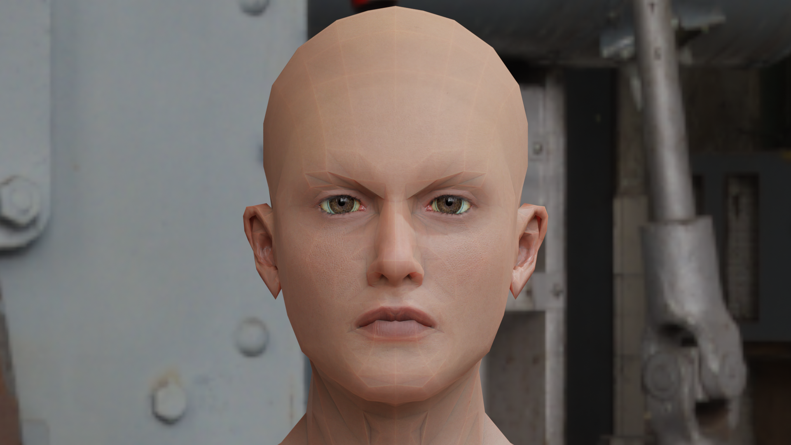
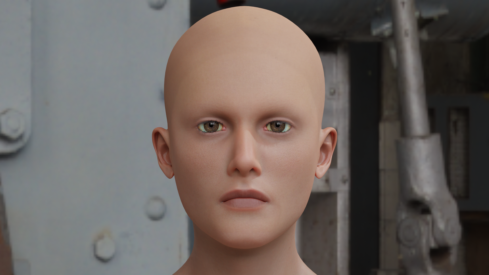

Best Practices
Import/Export
You might not like how the character you’ve created,
But maybe you really like other parts of it, such as the jaw and lips.
You can iterate on the same character indefinitely if you use the export morphs option.
Once you’re ready to finalize your character you can use the export morphs option, and it will create a YAML file that will contain all the options you’ve set and can be loaded in at any time.
This allows for easy collaboration and improving the same character by tweaking values after everything is done.
Eevee & Real Time Rendering
In Eevee, Most Characters will require Ray Tracing to work properly due to the fact they use a Refraction Based Glass Shader.
Cycles & Offline Rendering
For Offline Renderers such as Cycles, Low polycount meshes like Reom can cause issues with the shading. It is advised to use the Subdivision Surface modifier, in order to create a more convincing image.
{kind=link}
Reom at Subdivision Level 0, Nobody is going to be convinced by this mesh.
{kind=link}
Reom at Subdivision Level 1, It has signficantly improved however, there are still some obvious shading issues on the neck and forehead.
{kind=link}
Reom at Subdivision Level 2, There are now less obvious issues but a keen eye can still notice the forehead and chin.
{kind=link}
Reom at Subdivision Level 3, There are little to no shading issues and everything is working as intended. Note the increased polycount and RAM usage when increasing subdivison level, one must weigh marginal increases in fidelity with exponential increases in rendering costs.